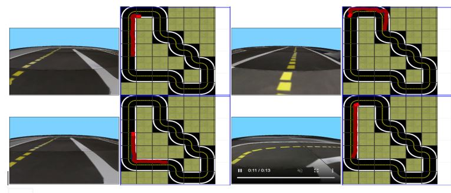
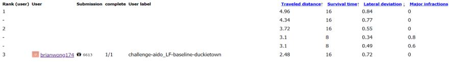

Host department: Department of Computer Science
Project supervisor: Dr.Y.K.Choi (Department of Computer Science)
Duckietown Project is an interdisciplinary robotics project that is designed for experiential learning, while applying technical knowledge in A.I. and robotics. In this project, students will learn knowledge about convolutional neural network, computer vision, artificial intelligence and robotics and implement AI algorithms to work on auto-driving vehicles running in a real miniature environment.
Team member: Wong Lok Hei, BEng(CompSc)
The project aimed to give insights to students about the development framework for autonomous vehicles. The goal in the project is to make the autonomous vehicle able to achieve the lane following task.
1. To detect lines and their color along the lane with the information received by the camera.
2. To measure and estimate the pose of the autonomous vehicle.
3. To plan the path and control the speed of the autonomous vehicle
Robot Operating System (ROS) is used for the implementation of the robot framework. ROS implements several styles of communication between different processes (named as nodes), synchronous communication over service, asynchronous streaming of message over the topic, and storing data in a parameter server. ROS offered a distributed framework that allows nodes to be individually designed.In this project, Python is chosen as the programming language in the development of each node.
The team start working since the second semester of 2020. The team held regular meetings and pay a lot effort in self-learning and preparation of the AI-DO.
Please enjoy the video below to know more about the Duckietown Project
This is the first time for the HKU Duckietown Team using the technique of ROS to implement the system of the Bot. The team make a great success with the resuly as shown below.
 With ROS, we can have a more robust design of the robot. There are much more challenges can be tried in the future. The current implementation of ROS in the Duckiebot can serve as a good prototype for HKU students further learning in the future.
Joining the HKU Duckietown Team gives me an unique experience. In the preparation period, I have improved my time management skill. I have become more self-motivated in learning new technology. The project gives me a great chance in applying my knowledge in Robtics and Computer Vision. It is definitely a valubale experience in joining the team, it futher consolidates my passion in autonomous vehicle.